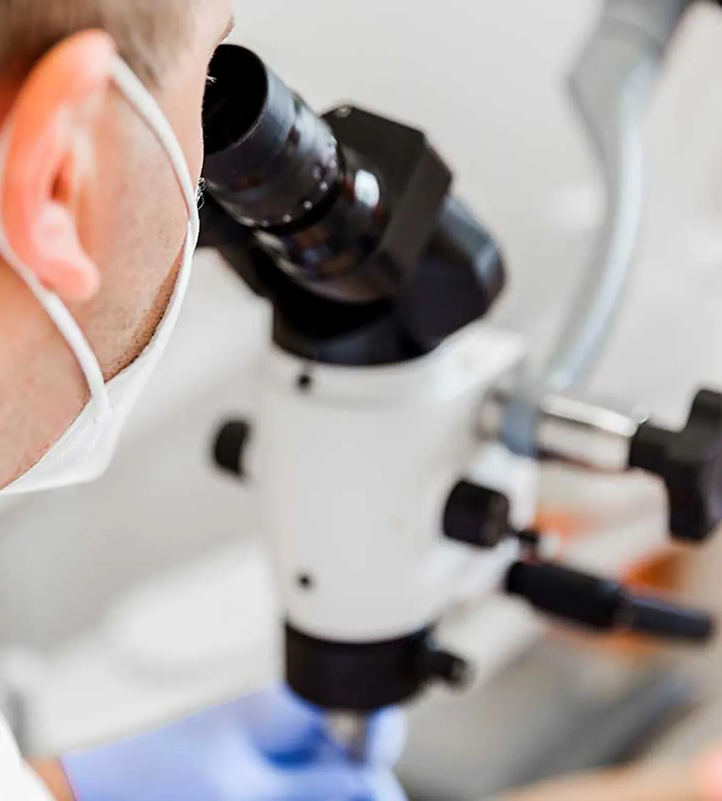
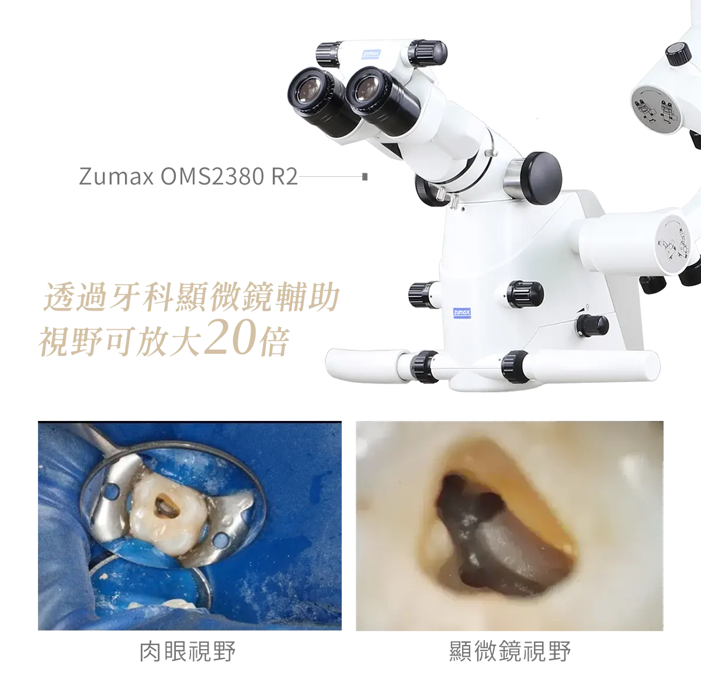
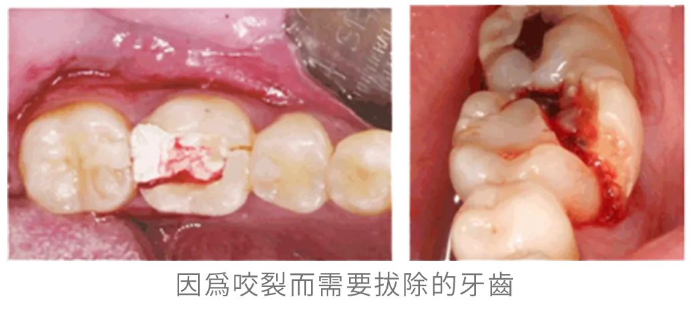

顯微根管Microscopic Root Canal
將視野放大20倍，提高牙齒存活率
顯微根管透過牙科顯微鏡放大視野，協助醫師尋找細小根管、裂紋或鈣化位置，提升複雜根管治療的可視性與精準度。

了解顯微根管，選擇合適治療
顯微根管透過牙科顯微鏡放大視野，協助醫師尋找細小根管、裂紋或鈣化位置，提升複雜根管治療的可視性與精準度。
生活牙醫會依照每位患者的口腔條件、期待、預算與長期維護需求，安排完整檢查與醫師說明。療程開始前會先釐清適合對象、可能限制與替代方案，讓治療計畫更透明。
實際治療方式與時間會因牙齒狀況、牙周健康、咬合、生活習慣與全身病史而異，建議以現場醫師診斷為準。

什麼狀況需要顯微根管治療？
並非所有根管治療都一定需要使用顯微鏡；當根管構造複雜、視野受限或需要再次治療時，顯微鏡能協助醫師放大細節、確認治療位置並進行更精細的處理。
鈣化根管
長期發炎、外傷或年齡變化可能使根管鈣化、變得狹窄，增加尋找根管入口與清創的難度。
二次根管治療
過去治療後仍反覆發炎或感染，需要重新進入根管，移除舊填充物、異物並再次清創。
疑似牙齒裂痕
牙齒出現不明原因的咬合痛或反覆不適時，可透過高倍率視野協助確認裂痕位置與深度。
特殊根管構造
根管較細、彎曲，或有 C 型根管、側支根管等複雜構造時，需要更清楚的視野協助定位。
牙根尖手術
需處理牙根尖病灶、進行精密切除與逆向充填時，顯微鏡可協助辨識細部結構與操作範圍。
從評估到穩定追蹤
每個療程都會先確認口腔基礎條件，再依診斷結果安排合適步驟與回診節奏。
真實的改變
嚴選真實案例，由專業醫師團隊親自操刀，沒有千篇一律的療程，只有最適合你的量身規劃

顯微根管療程FAQ
整理諮詢時常見的問題，協助您在看診前先掌握基本方向。
做完根管治療的牙齒，失去了牙髓腔中神經、血管等營養供應，再加上進行根管治療前必須打開牙髓腔，會使齒質減少，牙齒會變得較脆、易斷裂。
若是前牙，只要齒質足夠，未必需要做假牙，只是日後該牙齒會變黑，且飲食千萬要小心、避免啃咬硬物。
但若是後牙，咬合力大至 50 到 70 公斤，因此一定要做假牙保護，以免因過大的咬合力量而咬崩牙齒，導致牙齒拔除，最後只好花更多錢做假牙牙橋或植牙。

立即諮詢顯微根管
歡迎預約諮詢，由醫師一對一親診為您規劃療程，讓我們一起打造最符合需求的治療方案